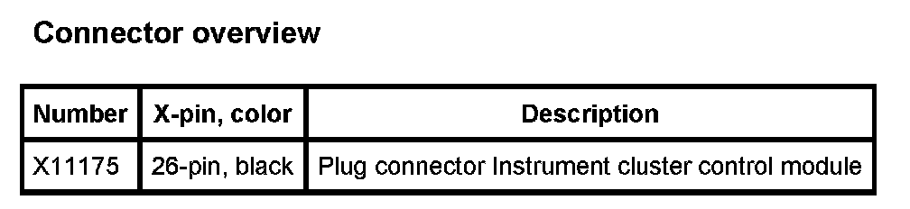

Operation CHARM
: Car repair manuals for everyone.
Home
>>
BMW
>>
2007
>>
X3 3.0si (E83) L6-3.0L (N52K)
>>
Repair and Diagnosis
>>
Instrument Panel, Gauges and Warning Indicators
>>
Relays and Modules - Instrument Panel
>>
Instrument Panel Control Module
>>
Diagrams
Instrument Panel Control Module: Diagrams
A2a Instrument Cluster Control Module:
